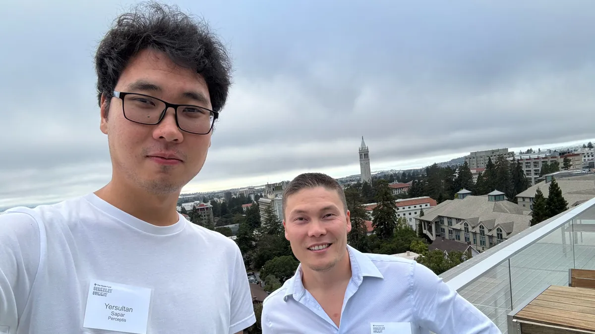

Автор: Батырхан Тогайбаев
Как казахстанский сервис по поиску врачей меняет рынок медуслуг и выходит в другие страны
Forbes
11.02.2025

Автор: Сергей Никитин
Казахстанский стартап AIDENTIS внедрит технологии ИИ в клиническую диагностику в стоматологии
Digital Business
17.02.2025

Автор: Гульнара Дорошкевич
Казахстанец запустил мобильную игру и за прошлый год заработал $18 млн. История Grand Mobile
Digital Business
24.02.2025
Автор: Елизавета Филоненко
«Уже вложили 500 тысяч долларов».Казахстанка придумала стартап,который помогает лечить зубы
Digital Business
14.02.2025


Автор: Батырхан Тогайбаев
AI-стартап казахстанцев привлёк $3,6 млн. Экс-консультант McKinsey Алибек Достияров упрощает работу консалтинговых компаний.
Forbes
06.02.2024

Автор:Арайлым Калмухаметова
Парень из Казахстана в 17 лет запустил стартап и хочет победить рак. Вот его история
Digital Business
10.02.2025

Автор: Вадим Банный
Казахстанский стартапер рассказал, как получил $1 млн от известного инвестора из США
Digital Business
24.02.2025

Автор: Samantha Subin
Obvious Ventures, сооснованный Эваном Уильямсом из Twitter, планирует привлечь фонд в $400 миллионов.
CNBC
26.02.2025

Автор: Kai Nicol-Schwarz
ElevenLabs выпускает новую модель ИИ, которая, по её утверждению, превосходит конкурентов из Google и OpenAI.
Sifted
27.02.2025

Автор: Сергей Никитин
Казахстанский стартап BEKSAR и MOST Neobank запустили программу финансирования для малого бизнеса
Digital Business
27.02.2025

Автор: Меруерт Сасенова
Арсен Томский заявил о планах вывести inDrive на IPO в США. По его словам, это стратегически обоснованный для компании шаг
Forbes
20.02.2025

Автор: Анель Курманова
Четыре стартапа из РК вошли в лонг-лист международной премии
Kapital
24.02.2025

Автор: Kyle Wiggers
Новые AR-очки Meta для исследований могут измерять частоту сердечных сокращений.
Tech Crunch
27.02.2025

Автор: Дарья Шаталова
Женщины для женщин: как Наталья Водянова и Серена Уильямс инвестируют в фемтех
Forbes
27.02.2025